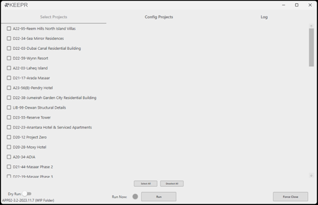
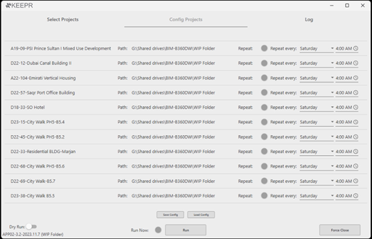
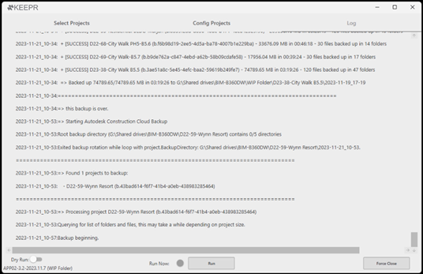
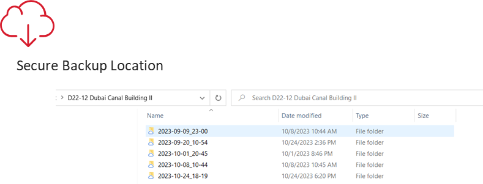

Demos & interface






KEEPR · Sheet Bridge
C# · WPF · Autodesk Platform Services · ACC / BIM 360 APIs
KEEPR is a desktop application using Autodesk Platform Services to schedule and manage weekly backups of ACC and BIM 360 projects. Cloud-hosted does not mean backed up; this closes that gap.
Sheet Bridge is a web application for bulk-editing ACC and BIM 360 sheet attributes, replacing a slow one-at-a-time process in the web UI.



